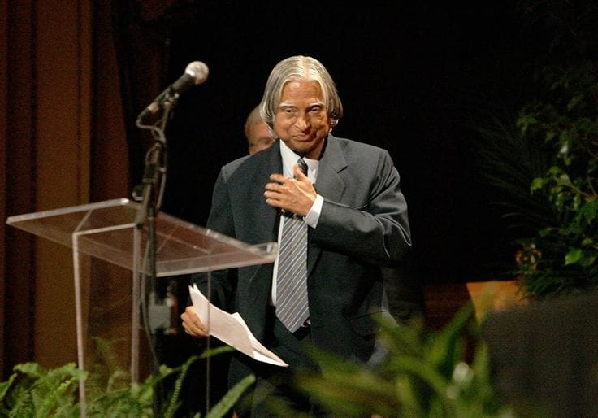
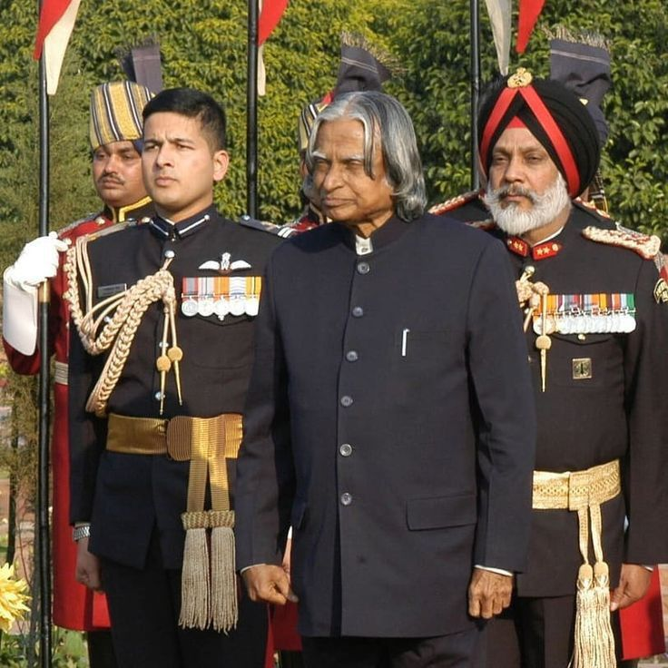

A.P.J. Abdul Kalam served as the 11th President of India from 2002 to 2007, a role he took on after a distinguished career as a scientist and aerospace engineer involved in India's space and missile development. He was elected with the support of major political parties and became known as the "People's President" for his popular appeal, vision for development, and dedication to youth and education.
as the "People's President," he was a former aerospace scientist who had worked with ISRO and DRDO and was instrumental in India's missile development. After his presidency, he returned to his passions for teaching, writing, and public service..
During his presidency from 2002 to 2007, A. P. J. Abdul Kalam focused on fostering India's technological advancement, especially in space and defense, promoted science education for youth, and worked to make healthcare more accessible. He was known as the "People's President" for his inspirational nature and efforts to connect with citizens.
